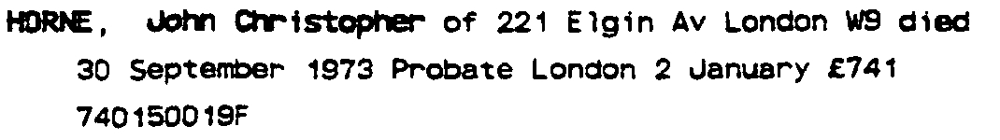
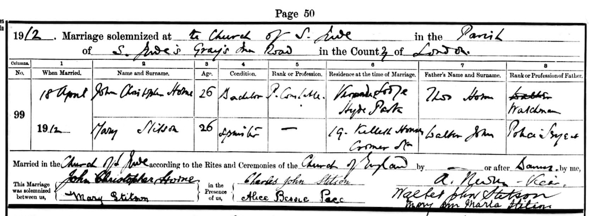

John Christopher Horne 1886 - 1973
[ Home ] | [ Calendar ] | [ Surnames Index ] | [ Errors ] | [ Family History ]A police constable and the child of Thomas Horne (a brewer's drayman) and Harriett Woods, John Horne, the first cousin twice-removed on the father's side of Nigel Horne, was born in St Pancras, London, England on 18 Feb 18861,2,3, was baptised there on 21 Apr 1886 and married Mary Stitson (with whom he had 1 child, Winifred Mary) at St Jude's Church, Gray's Inn Road, Camden, London, England on 18 Apr 19124.
During his life, he was living at Britannia Street in St Pancras on 31 Mar 19018; at Police Station, Hyde Park, London on 2 Apr 19117; at 94 Scott Ellis Gardens, St John's Wood, London on 14 Jun 19146; at 19 Grittleton Road, Maida Vale, London on 29 Sept 19391 - less than a mile from his sister Hilda Alice who was living at 19 Grittleton Road, Maida Vale, London, when he was living with his sisters, Rosa Emily and Hilda Alice; and at 221 Elgin Avenue, London, England in 1973.
He died on 30 Sept 1973 in Paddington, London, England3 and was buried in Camden on 5 Oct 1973 (an overcast day)5.
Parents
- Thomas Warner was born c. Nov 1854
- Harriett was born in 1860
Children
- Winifred Mary was born on 6 May 1914
Citations
- 1939 Register - Findmypast (was the head of the household)
- England & Wales births 1837-2006 - Findmypast
- England & Wales deaths 1837-2007 - Findmypast
- England & Wales marriages 1837-2008 - Findmypast
- https://www.deceasedonline.com/servlet/GSDOSearch?DetsView=Summary&src=ext&fileid=1876743
- From daughter's baptism record
- 1911 Census for England & Wales - Findmypast (was age 24)
- 1901 England, Wales & Scotland Census - Findmypast (was age 15 and the son of the head of the household)
Media
John Christopher Horne - probate

John Christopher Horne resign 1

John Christopher Horne resign 2

John Christopher Horne - Mary Stitson - Marriage Certificate

Winifred Mary Horne - baptism

England & Wales births 1837-2006 - BMD/B/1886/1/AZ/000290/034
1911 Census for England & Wales - GBC/1911/RG14/00426/0259/13
England & Wales deaths 1837-2007 - BMD/D/1973/4/AZ/000603/025
England & Wales marriages 1837-2008 - BMD/M/1912/2/AZ/000463/079
1939 Register Transcription - TNA-R39-0430-0430B-012-10
Family Tree

Map
Generated by ged2site. Last updated on Jul 3, 2024
Known Issues
Residence record for 1973 contains no citation